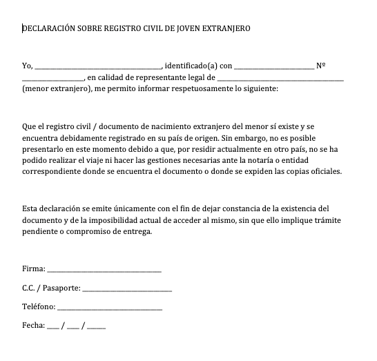
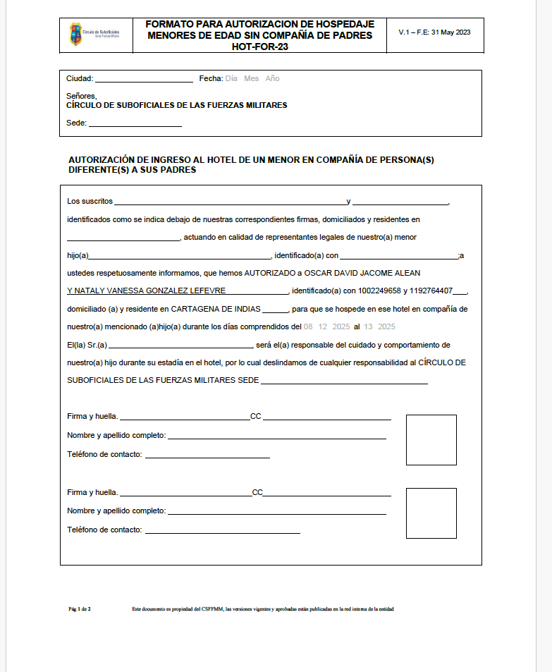
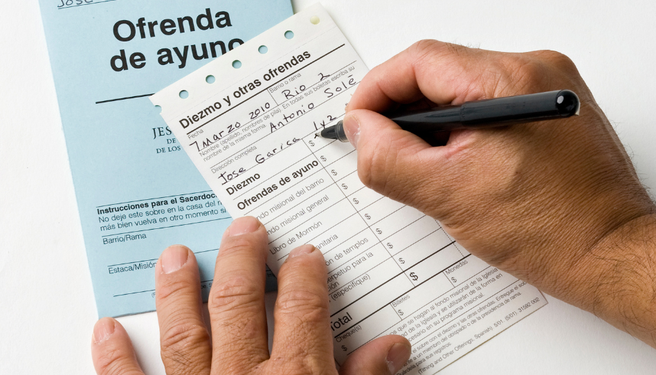

1
Documentos de Identidad
Es indispensable brindar copias de los siguientes documentos:
- Cédula de ciudadanía/documento de identidad del padre.
- Cédula de ciudadanía/documento de identidad de la madre.
- Registro civil de nacimiento del joven (no es necesaria copia original/autenticada).
2
Declaración para Extranjeros
Nota: Este paso aplica solo si el participante es extranjero.
El representante legal del joven debe llenar la Declaración sobre Registro Civil.
- Debe incluir identificación y firma.
- Adjuntar copia del pasaporte.

Imagen 1: Declaración sobre Registro Civil
3
Autorización Médica
Diligenciar el Formulario de Permiso y Autorización para dar Atención Médica.
Evento: PFJ (Para la Fortaleza de la Juventud)
Ciudad: Santa Marta
Fechas: 8 - 13 de Diciembre
Asegúrese de llenar todos los datos médicos requeridos.
 Imagen 2: Formulario de Autorización Médica
Imagen 2: Formulario de Autorización Médica
4
Permiso del Hotel
Llenar el Formato de Autorización de Hospedaje (Sede Trupillos).
Datos Requeridos:
- Ciudad y Fecha: Diligenciar según corresponda.
- Padres: Nombres completos, dirección y documento de identidad.
- Participante: Nombre completo e identificación del hijo/a.
- Fechas de la actividad: Del 8 al 13 de Diciembre.
Responsables del Cuidado:
OSCAR DAVID JACOME ALEAN
NATALY VANESSA GONZALEZ LEFEVRE
Importante: El documento debe llevar firma y huella de los padres, además del
número de documento de identidad.

Imagen 3: Formato Permiso del Hotel
5
Proceso de Pago
El pago se debe realizar mediante un donativo de diezmo.
Instrucciones: En el formato de donativo, ubique la casilla llamada
"Otros".
- Escribir PFJ en la descripción.
- Monto total: $156.000
Nota: El precio puede disminuir según las actividades realizadas por los jóvenes.

Imagen 4: Ejemplo de llenado del donativo